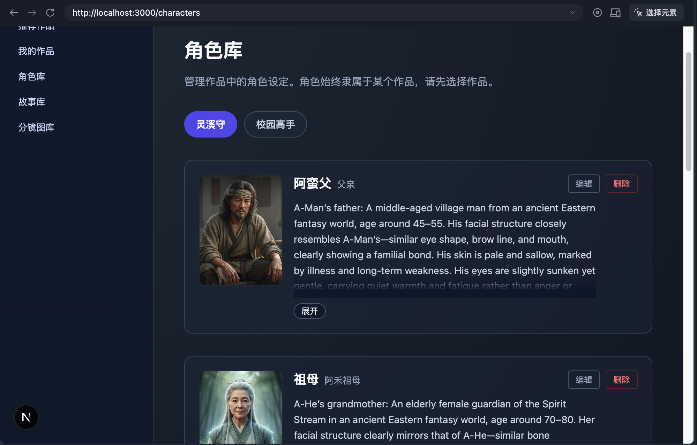
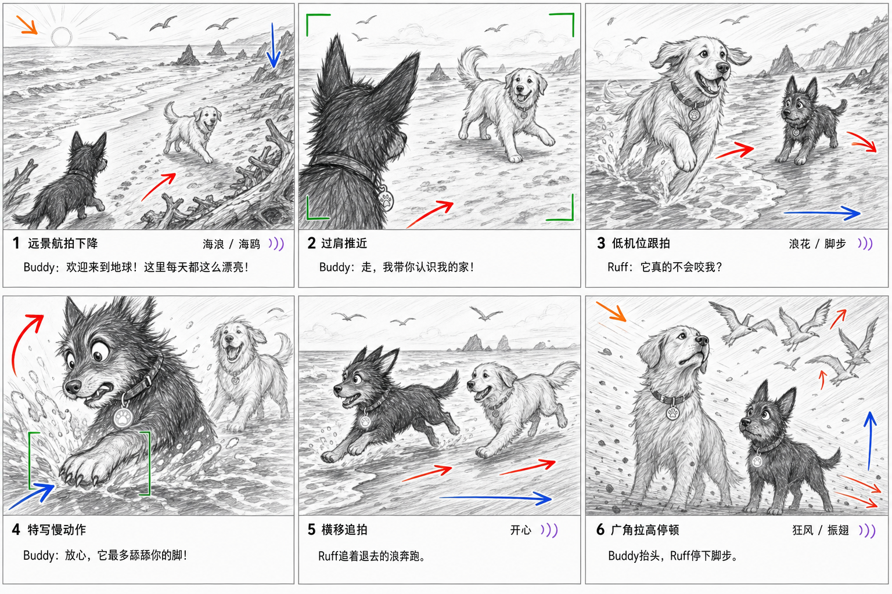
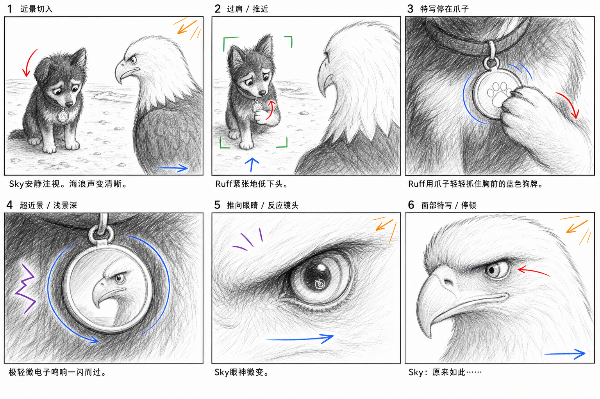
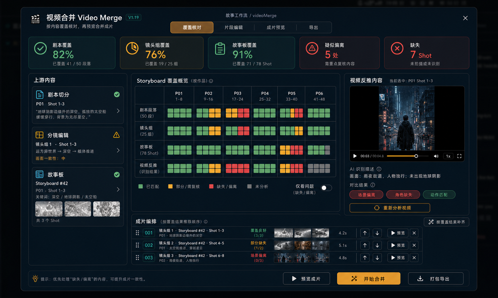
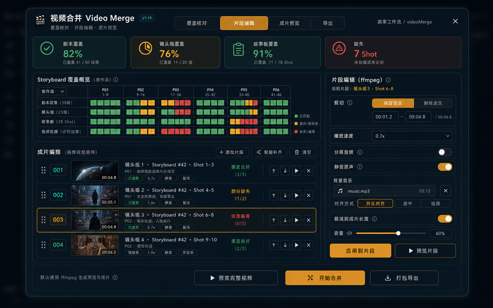
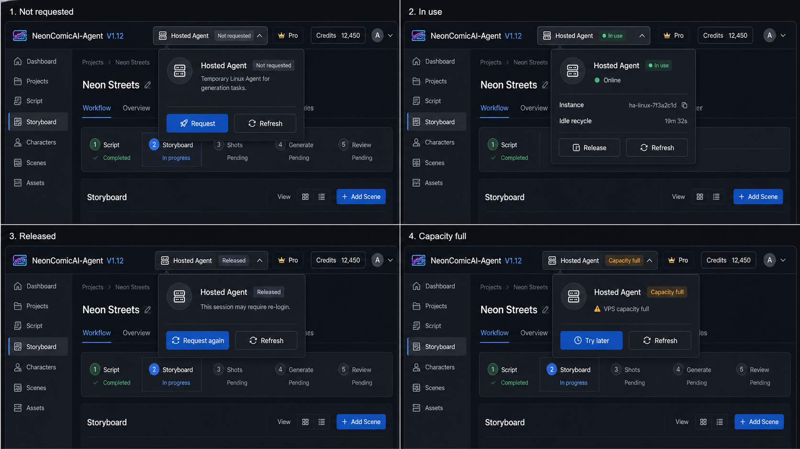
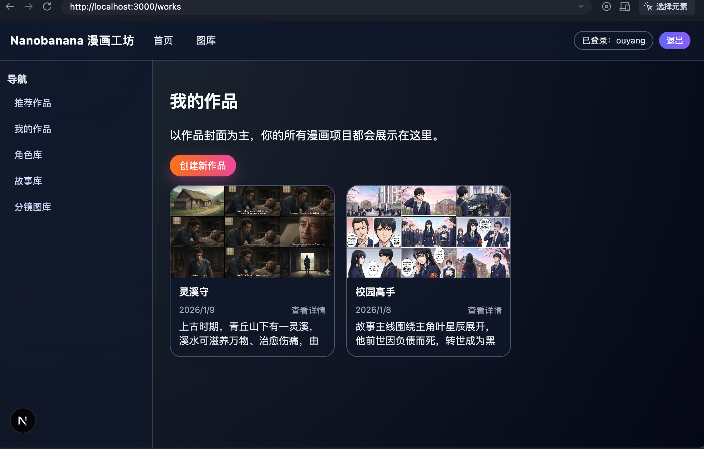
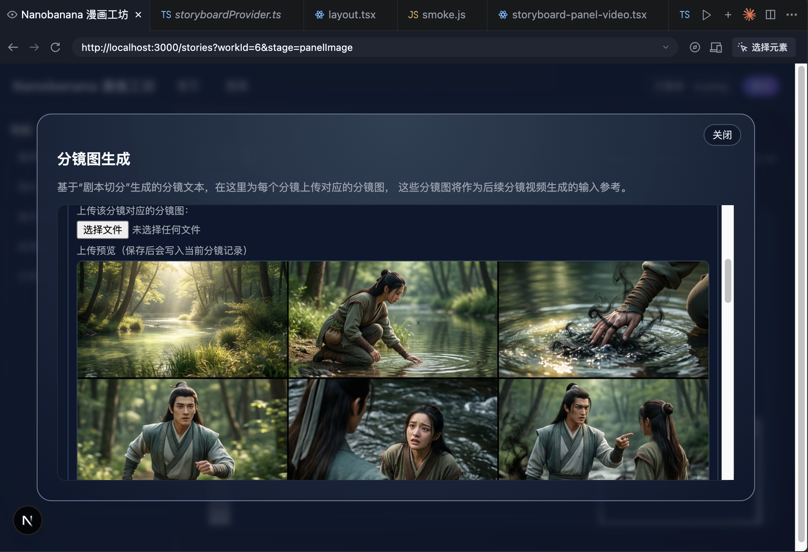
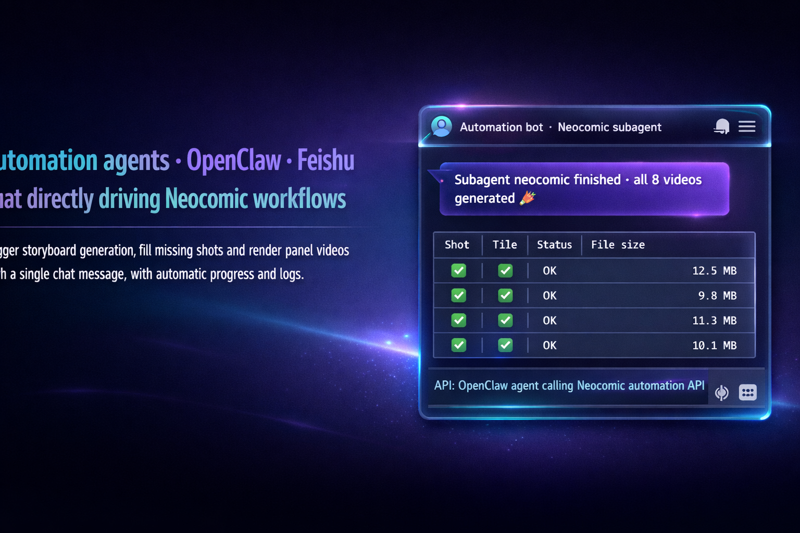

IP 资产IP assets
角色、服装、道具、场景和画风都跟着 IP 走。做系列内容时，不用每集重新整理一遍基础设定。Characters, costumes, props, scenes and style stay with the IP, so series work does not start from scratch every episode.

漫剧 / 短剧制作工作台Short-drama production workspace
先把故事改成可拍的剧本，再拆镜头、出分镜和故事板；视频片段回来后继续核对剧情覆盖和可用时间码。NeonComicAI-Agent 让团队知道每一步做到哪、还差哪。 Rewrite the story into a usable script, split it into shots, build panels and storyboards, then check returned video segments for coverage and usable timecodes.
这次定位调整，把一次出图往后延伸到短剧制作里真正麻烦的部分：故事整理、剧本改写、镜头拆分、分镜图、故事板、视频片段、覆盖核对和导出。普通用户按步骤确认，团队也能回到任意节点重做。 The product now reaches beyond one-off image generation into the messy parts of short-drama work: story cleanup, rewriting, shot breakdown, panels, storyboards, video segments, coverage review and export.
角色、服装、道具、场景和画风都跟着 IP 走。做系列内容时，不用每集重新整理一遍基础设定。Characters, costumes, props, scenes and style stay with the IP, so series work does not start from scratch every episode.
节点怎么排、任务怎么跑交给后台；用户看到的是当前要确认什么、下一步会生成什么。Scheduling happens behind the scenes. Users see what needs review now and what will be generated next.
视频片段先被反推成可读内容，再和剧本、分镜、故事板对照，避免把缺镜头的素材直接拼成片。Video segments are analyzed before merging, then compared with scripts, panels and storyboards so missing shots are caught early.
V1.13 到 V1.21 没有继续把“生成”做成黑盒，而是拆成可检查的节点。每一步都能人工确认、回看素材和查看任务状态。Recent versions split generation into checkable stages, with human review, asset history and job status kept at each step.
按 IP 放项目、季集、角色和素材。Keep projects, seasons, episodes, characters and assets under the IP.
把原始故事改成剧本，再拆成可执行的镜头组。Rewrite raw stories into scripts, then split them into workable shot groups.
导演模式扩镜头，或按目标镜头数补充；结构化数据不被打散。Expand shots through director mode or a target count while keeping structured data intact.
2 到 12 格都能排，不再被固定九宫格限制。Use 2 to 12 panels instead of being locked into a fixed 3x3 grid.
同时产出故事板、提示词和不带人物的场景参考。Create storyboards, prompts and clean scene references together.
本地、Hosted Agent 或 Bridge2Doubao 领取视频任务并回写结果。Local, Hosted or Bridge2Doubao agents claim video jobs and write results back.
标出可用时间码，组合成可预览、可调整的初剪。Mark usable time ranges and assemble a rough cut that can be previewed and adjusted.
服装、妆造、道具、载具、场地和设施能从分镜里整理出来，也能单独生成设定图、三视图和细节图。Costumes, props, vehicles and sets can be pulled from panels or generated as references, turnarounds and detail sheets.
镜头数量按剧情来，画面排版按交付规格来；需要补格时，只补本次画面需要的内容。Shot count follows the story, layout follows the delivery format, and extra panels are added only when the current output needs them.
把镜头、动作、对白节奏和局部风格整理好，后面生成视频时不用从零重写。Camera, action, dialogue rhythm and local style are prepared once, so video prompts do not need to be rewritten from scratch.
故事板之外，再留一张干净的空场景，方便统一场景、复用布景，也方便美术检查。A clean empty scene is kept beside the storyboard for continuity, set reuse and art review.
每个视频片段都先拆看场景、角色、动作和缺失点，再和上游内容做红黄绿标记。Each segment is checked for scene, character, action and missing details, then marked against the upstream plan.
从候选视频里挑可用区间，记录来源、置信度和人工确认状态，再交给 ffmpeg 预览和导出。Usable ranges are selected from candidate videos with source, confidence and review state before preview and export.
分镜不是终点。系统会沿用已经确认的镜头顺序、角色动作、镜头语言和局部风格，整理出视频阶段要用的三类材料：连续画面、可复用提示词、干净场景参考。Approved panels become three practical outputs for the video stage: continuous visuals, reusable prompts and clean scene references.


把选定分镜排成连续画面，导演、编剧和视频节点能直接对齐。Arrange selected panels into continuous visuals that directors, writers and video steps can align on.
把镜头语言、动作、对白节奏和局部风格转成结构化提示词，少重复写 prompt。Convert camera language, action, dialogue rhythm and local style into reusable prompts.
生成不带人物和字幕的场景参考，用来稳住画面一致性，也方便场景复用和美术复核。Generate clean scene references for consistency, scene reuse and art review.
系统不只检查“有没有视频文件”，还会看它有没有覆盖剧情、哪些时间码能用、哪些片段需要人看一眼，然后再生成可预览、可导出的初剪。The system checks story coverage, usable time ranges and clips that need review before building a previewable draft cut.


服务端管 UI、任务队列、素材存储、权限和计费；本地、云端和桌面 Agent 负责领任务、调用工具、上传结果、回写状态。The server handles UI, queueing, storage, permissions and credits. Local, hosted and desktop agents claim jobs, run tools, upload results and write status back.

任意页面都能看到 Hosted Agent 在线、部署中、容量已满还是需要处理；高风险操作仍然要人工确认，异常状态也直接展示出来。Creators can see whether Hosted Agent is online, deploying, full or needs attention. High-impact actions still require review, and exceptions are shown directly.



Next.js UI、Control API、Storage Service 和本地数据目录组成生产后台，迁移和备份都更清楚。Next.js UI, Control API, Storage Service and local data directories form a production backend that is easier to move and back up.
云上临时 Linux Agent、本地 Windows Agent 和本机 runner 都能按任务领取、执行、回写。Hosted Linux, Windows desktop and local runners can all claim jobs, execute work and report back.
接收账号级任务包，提交故事板图、提示词和参考图，下载视频后回写到工作台。It receives account-level job packages, submits storyboard images, prompts and references, then downloads videos and writes results back.
可接入内部系统、CI、批量素材生产和聊天 Agent，不必把所有操作都放在浏览器里点。Integrate with internal systems, CI, batch asset workflows and chat agents instead of doing everything through browser clicks.
普通工具多半围绕一次生成请求。NeonComicAI-Agent 更关注制作过程：故事、IP 资产、分镜、故事板、场景图、候选视频、覆盖核对和导出都放在同一条线里。Most generators focus on one request. NeonComicAI-Agent focuses on the production process: stories, IP assets, panels, storyboards, scene references, candidate videos, coverage review and export.
重要，但它们更像视频制作的中间资产，也可以单独交付。主方向是漫剧 / 短剧视频，分镜负责先把镜头设计、角色一致性和视频参考对齐。Yes, as intermediate assets that can also be delivered on their own. The main direction is short-drama video, and panels align shot design, character consistency and video references.
可以。团队可以只接入剧本拆分、资产库、分镜图、故事板、视频核对或 Agent 自动化里的几段，不需要一次替换完整流程。Yes. Teams can adopt script breakdown, asset libraries, storyboards, video review or agent automation without replacing the whole process at once.
默认走自托管服务、数据库和素材目录。图片、视频、任务状态和生成记录都能在工作台回看，后续迁移、复核和继续生产会更方便。The default model uses self-hosted services, a database and asset directories. Images, videos, job state and generation records stay reviewable in the workspace.
项目仍在内测和预售阶段。需要试用、私有化部署或把现有流程接进来，可以邮件联系。The product is still in private preview and pre-sale. Contact us for trial access, private deployment or workflow integration.